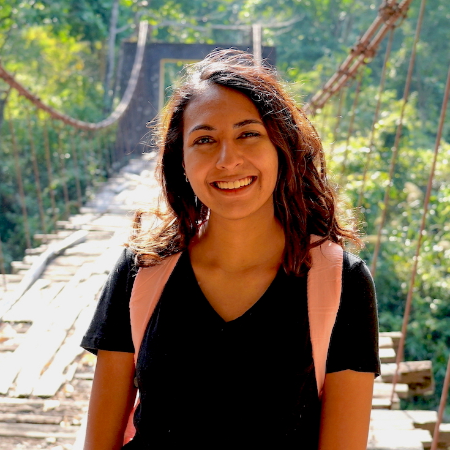

Hi! I am a PhD student in the Computer Science department at Stanford University. I am co-advised by Dan Boneh and Dorsa Sadigh. I am also an AI Science Writer at Anthropic. My current research interests span two threads:
During my PhD, I have also closely collaborated with the Computation and Cognition Lab (CoCoLab) and spent time as a Visiting Researcher at MIT LINGO. Previously, I worked at Microsoft Research Redmond and the amazing ETH Zürich Summer Research Fellowship.
I completed my undergrad in Computer Science and Creative Writing at Stanford, where I was a member of the Stanford NLP group and advised by Tatsu Hashimoto, Percy Liang, and Kalanit Grill-Spector.
Summer 2026: Research Intern at Genesis Molecular AI on AI-assisted drug discovery.
June 2026: Presenting at both AIED 2026 and ICML 2026 in Seoul, South Korea.
May 2026: Presenting our paper Hawkeye: Reproducing GPU-Level Non-Determinism, which was accepted to MLSys 2026 in Bellevue, WA.
May 2026: New preprint Proximal State Nudging: Reducing Skill Atrophy from AI Assistance, in collaboration with Toyota.
April 2026: My data sonification project, working with dynamic hourly forest data (e.g. solar radiation, wind speed), won 1st place at Hubbard Brook Research Foundation's "Water and Climate" data competition!
January 2026: Our paper Training large language models on narrow tasks can lead to broad misalignment is published in Nature.
January 2026: Our paper Policy Learning with a Language Bottleneck is accepted to TMLR.
October 2025: Presenting work on AI assistance for pharmacovigilance as a spotlight at Agents4Science, an experimental conference where we have to use AI to guide the research! I wrote a blog post about the experience here.
August 2025: Attending CRYPTO 2025 in Santa Barbara.
March 2025: Presenting our paper Shared Autonomy for Proximal Teaching at HRI'25 in Melbourne, and then visiting Uluru, Tasmania, and the Great Barrier Reef!
January 2025: Presenting our paper Optimistic Verifiable Training by Controlling Hardware Nondeterminism at both the Joint Mathematics Meeting (AI and Cryptography workshop) and University of Washington in Seattle.
December 2024: Presenting our paper Optimistic Verifiable Training by Controlling Hardware Nondeterminism at NeurIPS'24 in Vancouver.
November 2023: Presenting our paper Do Users Write More Insecure Code with AI Assistants? at CCS'23 in Copenhagen
August 2023: Hiked the West Highland Way in Scotland.
July 2023: Presenting our paper Generating Language Corrections for Teaching Physical Control Tasks at ICML'23 in Honolulu. Also went cage-free swimming with sharks! :)
March 2023: Visiting the Banff International Research Station for Mathematical Innovation and Discovery for the Research Directions in Number Theory WIN6 workshop.